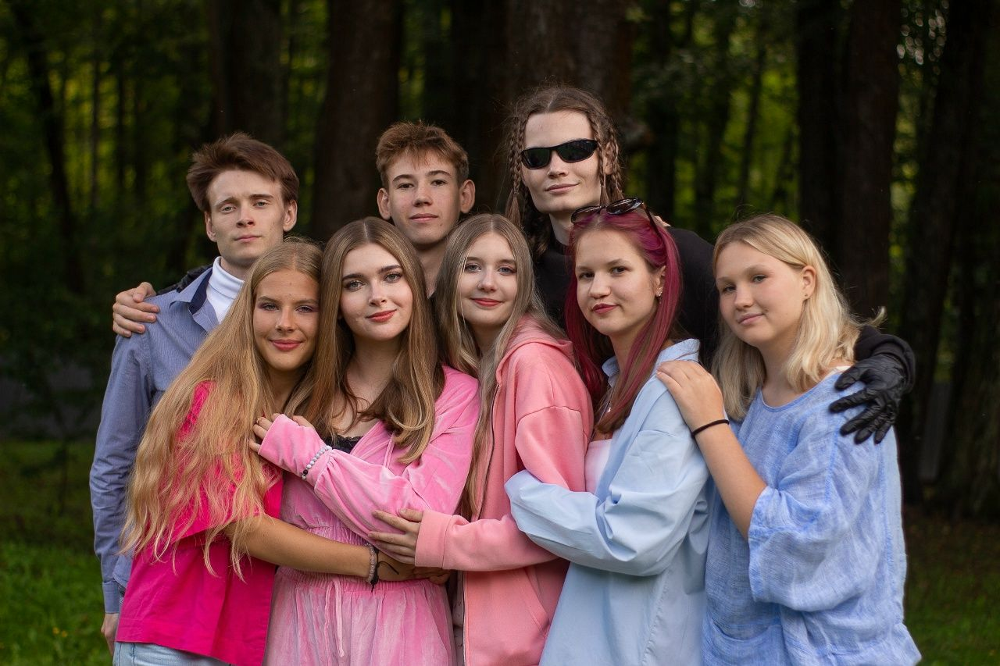
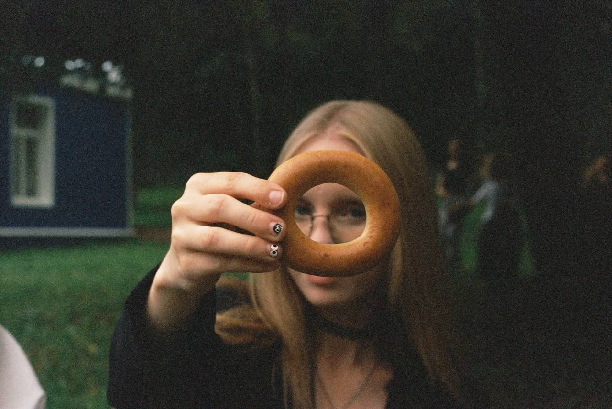
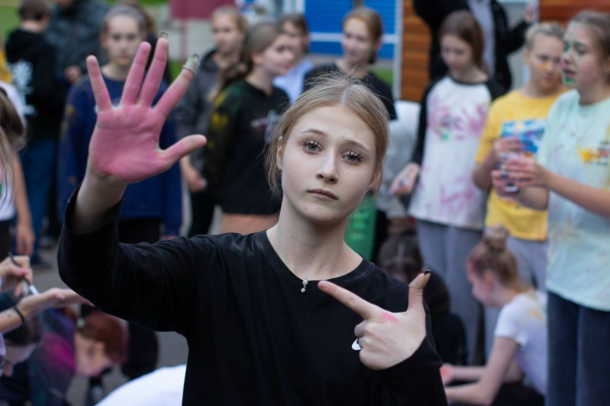
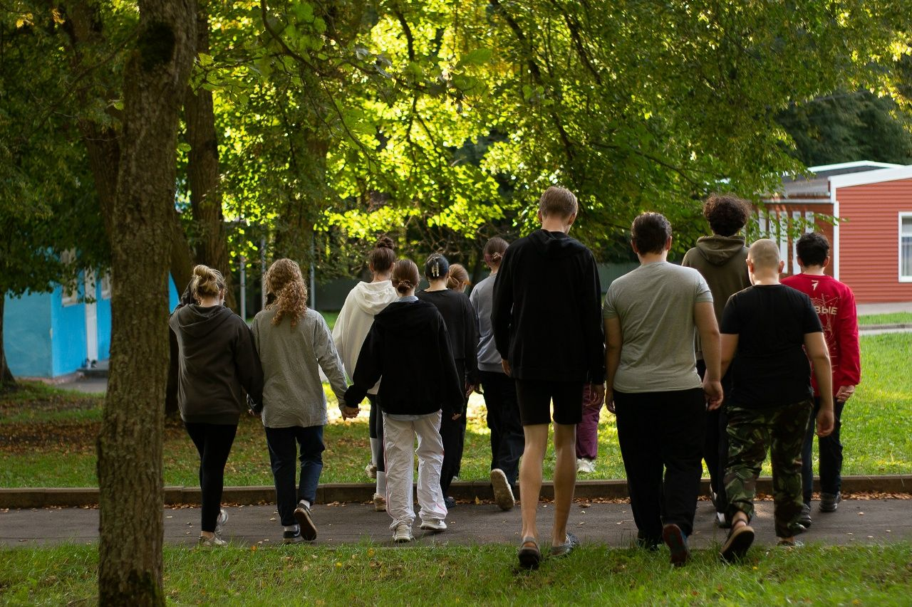
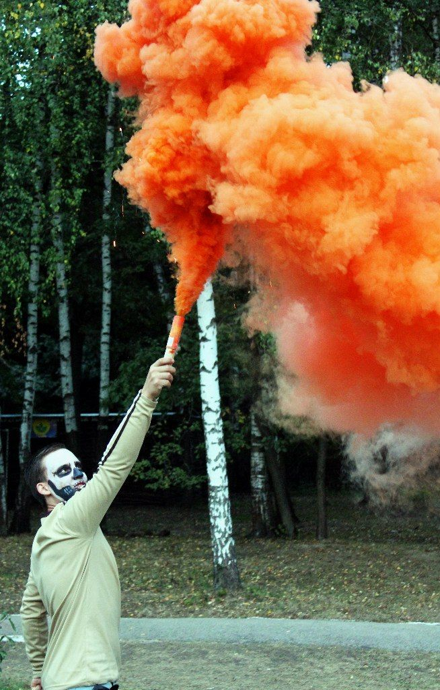
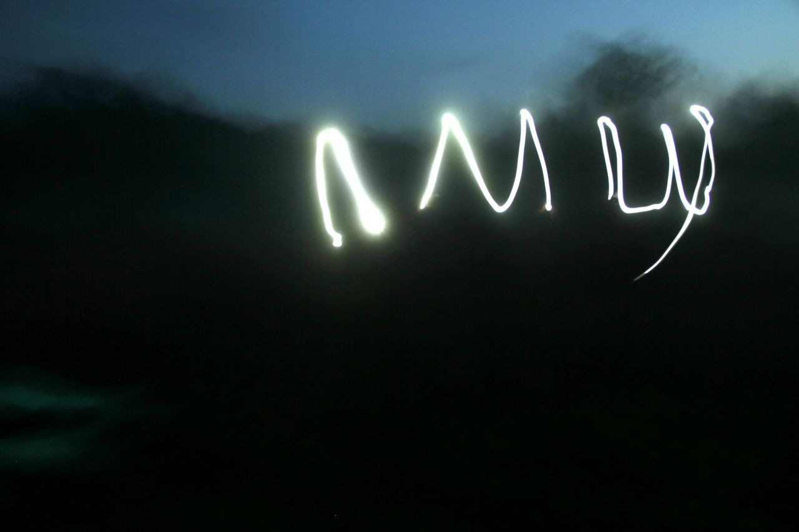
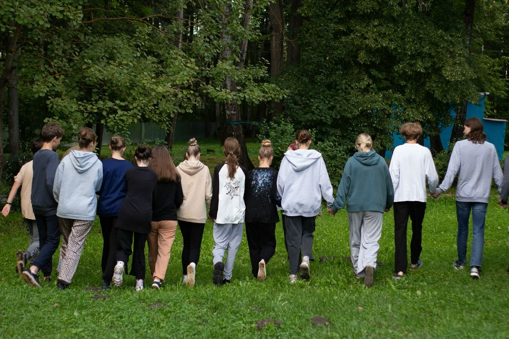
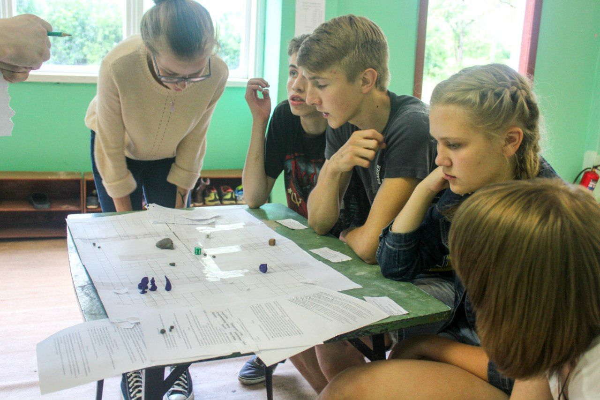
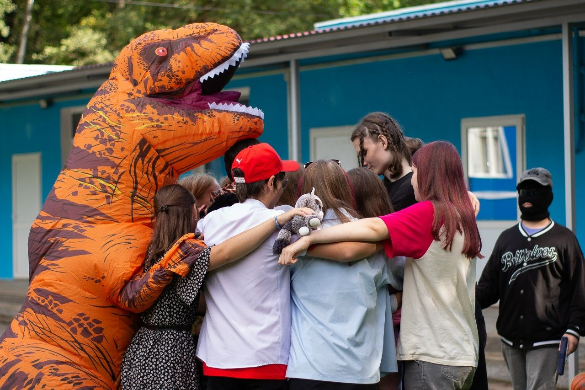
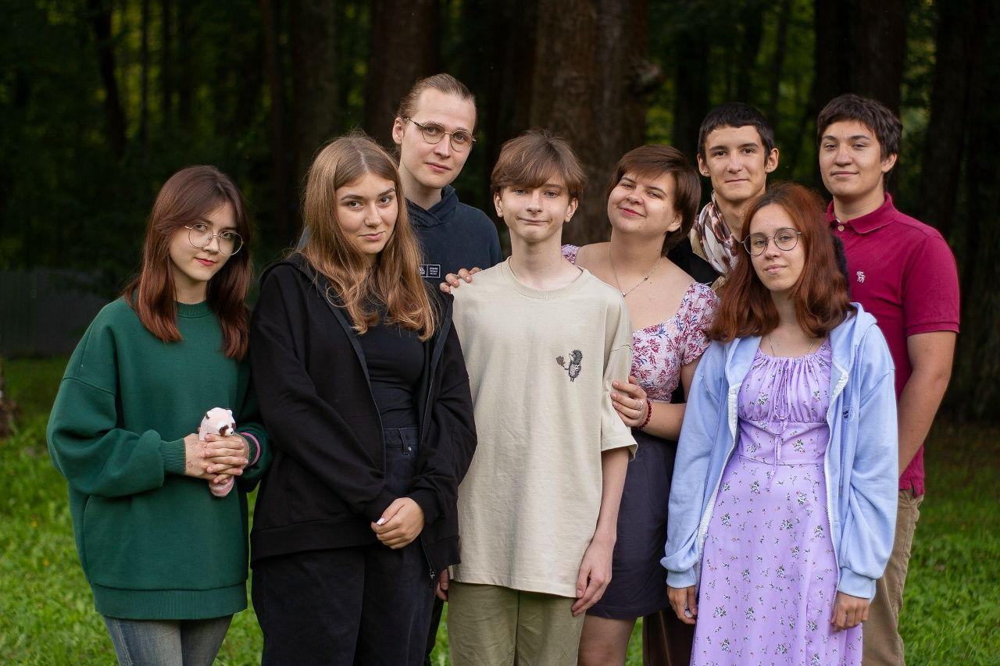

Атмосфера ЛМШ








Областной профильный лагерь «Летняя многопрофильная школа „Альтернатива“» (ЛМШ).
ЛМШ — это образовательный лагерь для школьников 7–10 классов. Наша команда состоит из молодых и инициативных студентов-преподавателей лучших университетов страны, таких как НИУ ВШЭ, РНИМУ им. Пирогова, РГАУ-МСХА им. Тимирязева и МПГУ. Каждое лето, начиная с 1998 года, мы показываем подросткам, что учёба может быть интересной и увлекательной.
В ЛМШ мы не только учимся. После пар тебя ждут вечерние клубы, большие игры, концерты и посиделки с отрядом.
Здесь важно понять, а не вызубрить. Курсы ты выбираешь сам, расписание собираешь тоже сам, а с любым вопросом можно подойти к преподавателю.
В течение смены ты будешь несколько раз выбирать 3 пары, которые предлагают наши кафедры. При этом необязательно, чтобы выбранные пары относились только к одной из них. Подробнее об учебном процессе и кафедрах можно узнать по ссылкам ниже.
Подробнее об учебной части
Лучший отдых после учёбы — смена деятельности. Огромная составляющая нашей смены — неучебная часть, которая и делает ЛМШ особенной. Во второй половине дня тебя ждут разные активности, о которых можно прочитать подробнее, нажав на них.
Вся неучебка







 Директор
Имя Фамилия
Директор
Имя Фамилия
 Замдиректора
Имя Фамилия
Замдиректора
Имя Фамилия
 Завуч
Имя Фамилия
Завуч
Имя Фамилия
 Завнеуч
Имя Фамилия
Завнеуч
Имя Фамилия
Уже готов стать частью ЛМШ? Тогда скорее записывайся на собеседование! Мы проводим его в Туле и Ефремове, а также онлайн для тех, кто не может приехать очно.
Записаться на собеседование